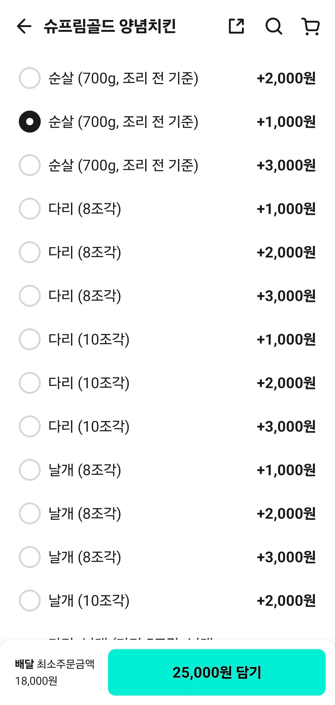

어떠한 의도가 있는건가 무엇을 암시하는거지

어떠한 의도가 있는건가 무엇을 암시하는거지
일단 이게 정배인듯 아직 세상보는눈을 어둡게 하고싶지않아 그런걸로 할래
뒤에 뭐 하나 더 붙일려고 3개씩 넣고, 까먹었나봄 ㅋㅋ
다른데서 사먹으라는거지
다리살 가슴살 비율인데 실수로 빠진줄 알았는데 다리 날개는 뭐지 ㄷㄷ
뭔가 돈 덜내면 숨겨진 디버프가 걸려있을꺼같네
최소금액이 안맞는것도아니고 뭐지진짜?
최소주문이나 쿠폰 금액 맞추라는건가
난 순살에 돈 더 붙이는거 이해가 안가더라 순살용 닭은 죄다 브라질산 아닌가? 다른 재료가 더 들어가는것도 아니고...
집에서 해먹으면 텐더 1kg에 6000원 사먹으면 400g에 2만원 ㅋㅋ
그니까 닭이 더 싼데 왜 비싼거야
상술은 이해로부터 가장 먼 감정이야
메뉴설명 읽는거에도 돈내야됨
브라질산 국내산 차이 아닌가?
프차 본사에서 메뉴설정 권한을 가지고있고 가맹점 상황에 따라 가격선택해서 쓰는거만 남겨놓고 나머지는 숨김처리 해야되는데
본사가 찐빠내서 숨김처리한게 다 풀리는 경우가 있고 드물게 가맹점에서 실수로 살려놓는 경우가 있음
사고몇번 쳐본 회사들은 기본값을 숨김으로 두고 필요한거 살려내서 쓰세요 함ㅋㅋ
저 가격에 상품이 있긴 해야할텐데
메뉴 설정하다 찐빠낸거 같은데